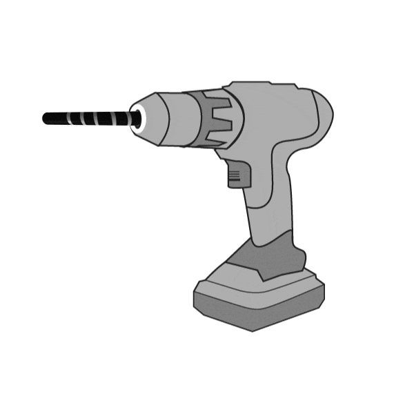
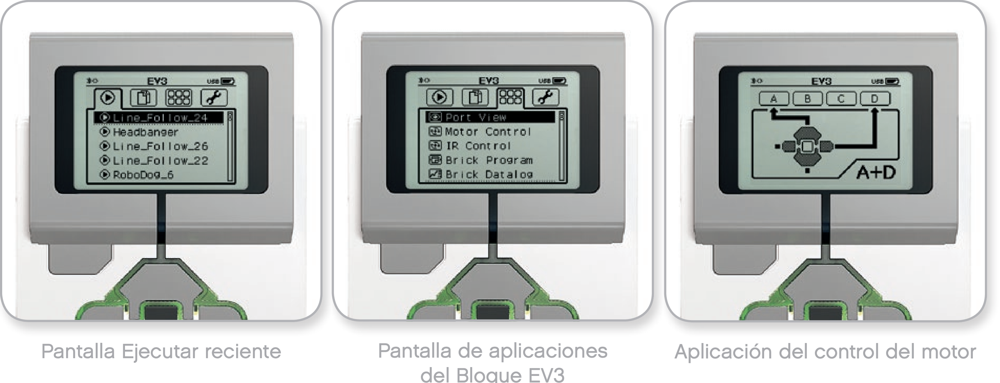

Ahora nos toca construir un taladro. Sería demasiado sencillo hacerlo con el motor mediano, por lo que, para complicarlo un poco, lo haremos con el motor grande.

Este proyecto lo vamos a dividir en 3 pasos. Primero haremos la parte de la maquinaria, después le
añadiremos un interruptor para su funcionamiento y por último le añadiremos una empuñadura para poder
sujetarla.
A continuación, mostraremos un ejemplo de construcción de un taladro base.
Empezaremos por adaptar los primeros engranajes al motor mediano.

Seguimos con la parte de la broca y el engranaje que la moverá.

Añadiremos el engranaje que une el motor a la broca y la estructura que sujeta todo.

Ya tendríamos la maquinaria completada.
Si ahora engancháramos un cable del motor al bloque EV3 (recuerda que tiene que ser a una de las letras) y lo
programáramos para que se moviera el motor, nuestro taladro funcionaría prfectamente.
Ahora le añadimos el botón para accionarlo.

Con esto tendríamos la segunda parte del proyecto.
Si además del cable del motor le enganchamos otro cable desde el botón hasta el bloque EV3 (a uno de los
números) podríamos hacer que funcionara nuestro taladro cuando pulsáramos el motor.

Terminaremos por la empuñadura. Quitaremos momentáneamente el botón y empezaremos a montar la estructura de la empuñadura.

Tenemos que enganchar la empuñadura y el botón al mismo tiempo a la maquinaria.

Cerraríamos el montaje por el otro lado.

Montaje terminado. Debería de quedarnos como en la imagen.

Le añadimos los cables para el correcto funcionamiento.

La programación para que nos funcione correctamente el botón de nuestro taladro podría ser el siguiente.

Nuestro proyecto terminado y programado funcionaría de la siguiente forma.